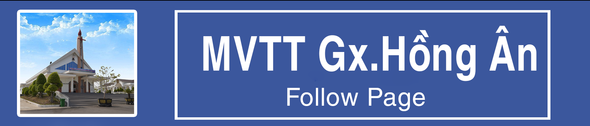

<!-- =========================================================
     KHỐI 1: CÁC BIỂU TƯỢNG BẢN BANNER MỞ RỘNG (FULL KHUNG)
     ========================================================= -->
<div class="hop-box-doc-lap">
    <div class="tieu-de-hop-box">🌐 LIÊN KẾT TRUYỀN THÔNG</div>
    <div class="vung-anh-full-khung">
        
        <!-- BIỂU TƯỢNG FACEBOOK FULL KHUNG -->
        <a href="https://facebook.com" target="_blank" class="nut-banner-lien-ket">
            
        </a>

        <!-- BIỂU TƯỢNG YOUTUBE FULL KHUNG -->
        <a href="https://youtube.com" target="_blank" class="nut-banner-lien-ket">
            
        </a>

        <!-- BIỂU TƯỢNG TRANG GIÁO PHẬN FULL KHUNG -->

         <a href="https://giaophanxuanloc.org" target="_blank" class="nut-banner-lien-ket">
            
        </a>

    </div>
</div>


<!-- =========================================================
     KHỐI 2: NHÚNG VIDEO YOUTUBE XEM NGAY TẠI CHỖ
     ========================================================= -->
<div class="hop-box-doc-lap">
    <div class="tieu-de-hop-box">🎬 VIDEO SUY NIỆM HÀNG TUẦN</div>
    <div class="vung-nhung-video">
        
        <!-- ➔ VỊ TRÍ NHÚNG VIDEO: Bạn dán nguyên thẻ iframe của Youtube vào đây -->
        <!-- Bạn chỉ cần thay mã vXb1_S7pYh8 thành mã video thật của bạn là chạy -->
        <iframe src="https://youtube.com/embed/1rsQcWwT-BQ" 
                title="YouTube video player" 
                frameborder="0" 
                allow="accelerometer; autoplay; clipboard-write; encrypted-media; gyroscope; picture-in-picture; web-share" 
                allowfullscreen>
        </iframe>
        </div>
        </div>
<div class="hop-box-doc-lap">
    <div class="tieu-de-hop-box">🎬 VIDEO PHỤNG VỤ / THÁNH CA</div>
    <div class="vung-nhung-video">
        
        <!-- ➔ VỊ TRÍ NHÚNG VIDEO: Bạn dán nguyên thẻ iframe của Youtube vào đây -->
        <!-- Bạn chỉ cần thay mã vXb1_S7pYh8 thành mã video thật của bạn là chạy -->
        <!-- BẠN COPY NGUYÊN VĂN DÒNG CHUẨN NÀY DÁN THAY THẾ CHO DÒNG CŨ -->
<iframe src="https://www.youtube.com/embed/Jg1oPNbBopU" 
        title="Kinh Hòa Bình - YouTube Video Player" 
        frameborder="0" 
        allow="accelerometer; autoplay; clipboard-write; encrypted-media; gyroscope; picture-in-picture; web-share" 
        allowfullscreen>
</iframe>

        
        
        
        
    </div>
</div>


<!-- =========================================================
     BỘ CSS TRANG TRÍ RIÊNG (DÁN VÀO TRONG THẺ <style> CỦA FILE ĐÓ)
     ========================================================= -->
<style>
    /* Định dạng chung cho khối hộp box mới */
    .hop-box-tien-ich {
        border: 1px solid #c8d6c9;
        border-radius: 6px;
        background: #ffffff;
        margin-top: 20px; /* Tạo khoảng cách với hộp thông báo phía trên */
        overflow: hidden;
        box-shadow: 0 2px 5px rgba(0,0,0,0.03);
    }
    
    /* Thanh tiêu đề màu xanh lá cây đồng bộ hệ thống */
    .tieu-de-hop-box {
        background: #115e07; /* Màu xanh lá đậm của bạn */
        color: #ffffff;
        padding: 8px 12px;
        font-weight: bold;
        font-size: 13.5px;
        text-transform: uppercase;
    }

    /* Vùng chứa danh sách các ảnh liên kết xếp dọc xổ xuống */
    .vung-chua-anh-lien-ket {
        padding: 10px;
        display: flex;
        flex-direction: column; /* Ép xếp dọc thành hàng hàng xuống dưới */
        gap: 8px; /* Khoảng cách giữa các ô */
    }

    /* Từng hàng ảnh liên kết nhỏ */
    .o-anh-lien-ket {
        display: flex;
        align-items: center;
        padding: 8px;
        border: 1px solid #eaeaea;
        border-radius: 4px;
        text-decoration: none;
        color: #333333;
        font-size: 13px;
        font-weight: 600;
        transition: all 0.2s;
        background: #fbfbfb;
    }
    /* Hiệu ứng đổi màu nhẹ khi rê chuột vào nút ảnh */
    .o-anh-lien-ket:hover {
        background: #f1fcf5;
        border-color: #449d39;
        color: #115e07;
    }
    /* Định dạng hình ảnh logo nhỏ (Facebook, Youtube) */
    .o-anh-lien-ket img {
        width: 24px;  /* Khống chế ảnh logo vuông vắn vừa vặn */
        height: 24px;
        margin-right: 12px;
        object-fit: contain;
    }

    /* Vùng nhúng video Youtube */
    .vung-nhung-video {
        padding: 10px;
        background: #fafafa;
    }
    /* Ép khung video Youtube khít khịt theo chiều rộng cột phải */
    .vung-nhung-video iframe {
        width: 100% !important;
        height: 160px !important; /* Chiều cao vừa vặn cho một khung video phụ */
        border-radius: 4px;
        display: block;
    }

        /* Định dạng hộp bọc độc lập đồng bộ với cột phải */
    .hop-box-doc-lap {
        border: 1px solid #c8d6c9;
        border-radius: 6px;
        background: #ffffff;
        margin-top: 18px; /* Khoảng cách đệm giữa các hộp box */
        overflow: hidden;
        box-shadow: 0 2px 5px rgba(0,0,0,0.03);
    }
    
   /* 1. ĐẶT DÒNG GỌI FONT NÀY LÊN TRÊN CÙNG TRONG THẺ <style> CỦA BẠN (Dòng đầu tiên) */
@import url('https://googleapis.com');

/* 2. SỬA LẠI LỚP ĐỊNH DẠNG TIÊU ĐỀ HỘP BOX */
.tieu-de-hop-box {
    background: #115e07; /* Màu xanh lá đậm của bạn */
    color: #ffffff;
    padding: 8px 12px;
    font-size: 13px;
    text-transform: uppercase;
    letter-spacing: 0.5px; /* Tạo độ thưa nhẹ giữa các chữ cho thoáng */

    /* 👑 CHỌN 1 TRONG 3 KIỂU FONT DƯỚI ĐÂY (Hãy xóa dấu /* của font bạn thích nhé): */
    
    font-family: 'Be Vietnam Pro', sans-serif; /* Kiểu 1: Hiện đại, rõ nét */
    /* font-family: 'Playfair Display', serif;   Kiểu 2: Cổ điển, trang nghiêm */
    /* font-family: 'Montserrat', sans-serif;      Kiểu 3: Uy nghi, bề thế */

    font-weight: 700; /* Ép chữ đậm lên hẳn */
}


    /* VÙNG CHỨA BANNER LIÊN KẾT FULL KHUNG KHÔNG CHỮ */
    .vung-anh-full-khung {
        padding: 12px;
        display: flex;
        flex-direction: column;
        gap: 12px; /* Khoảng cách thoáng giữa các bức ảnh */
    }

    .nut-banner-lien-ket {
        display: block;
        width: 100%;
        overflow: hidden;
        border-radius: 4px; /* Bo góc nhẹ cho ảnh biểu tượng */
        transition: transform 0.2s, box-shadow 0.2s;
    }

    /* ÉP BỨC ẢNH MỞ RỘNG CĂNG TRÀN 100% CHIỀU NGANG KHUNG HỘP */
    .nut-banner-lien-ket img {
        width: 100% !important;
        height: auto !important; /* Tự động tính chiều cao theo tỷ lệ ảnh để không bị méo */
        display: block;
    }

    /* Hiệu ứng nổi nhẹ lên cực chất khi người dùng rà chuột vào tấm ảnh */
    .nut-banner-lien-ket:hover {
        transform: translateY(-2px); /* Nhấc ảnh nổi lên một chút */
        box-shadow: 0 4px 10px rgba(0,0,0,0.1);
    }

    /* KHUNG NHÚNG VIDEO YOUTUBE */
    .vung-nhung-video {
        padding: 10px;
        background: #ffffff;
    }
    /* Ép khung video căng rộng khít khao lề cột phải */
    .vung-nhung-video iframe {
        width: 100% !important;
        height: 165px !important; /* Độ cao lý tưởng để video hiển thị chuẩn tỷ lệ 16:9 dọc */
        border-radius: 4px;
        display: block;
    }

</style>
